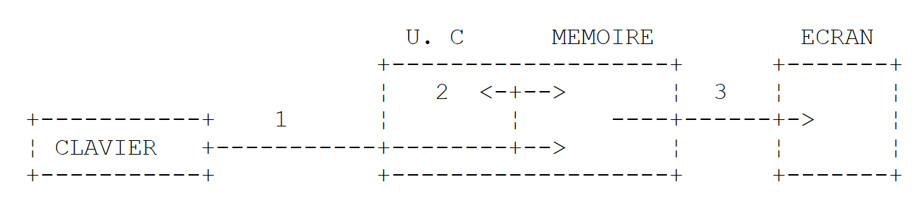
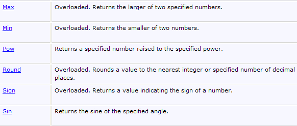
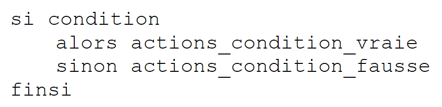

3. Fundamentos del lenguaje C#
3.1. Introducción
Trataremos C# primero como un lenguaje de programación clásico. Abordaremos las clases más adelante. En un programa hay dos cosas:
- datos
- las instrucciones que los manipulan
Por lo general, se intenta separar los datos de las instrucciones:
 |
3.2. Los datos de C#
C# utiliza los siguientes tipos de datos:
- los números enteros
- los números reales
- los números decimales
- caracteres y cadenas de caracteres
- los booleanos
- los objetos
3.2.1. Los tipos de datos predefinidos
Tipo C# | Tipo .NET | Dato representado | Sufijo de los valores literales | Codificación | Rango de valores |
Caracter (S) | carácter | 2 bytes | carácter Unicode (UTF-16) | ||
String (C) | cadena de caracteres | referencia a una secuencia de caracteres Unicode | |||
Int32 (S) | entero | 4 bytes | [-231, 231-1] [–2147483648, 2147483647] | ||
UInt32 (S) | .. | U | 4 bytes | [0, 232-1] [0, 4294967295] | |
Int64 (S) | .. | L | 8 bytes | [-263, 263 -1] [–9223372036854775808, 9223372036854775807] | |
UInt64 (S) | .. | UL | 8 bytes | [0, 264 -1] [0, 18446744073709551615] | |
.. | 1 byte | [-27 , 27 -1] [-128,+127] | |||
Byte(s) | .. | 1 byte | [0 , 28 -1] [0,255] | ||
Int16 (S) | .. | 2 bytes | [-215, 215-1] [-32768, 32767] | ||
UInt16 (S) | .. | 2 bytes | [0, 216-1] [0,65535] | ||
Single (S) | número real | F | 4 bytes | [1.5 10-45, 3.4 10+38] en valor absoluto | |
Doble (S) | .. | D | 8 bytes | [-1.7 10+308, 1.7 10+308] en valor absoluto | |
Decimal (S) | número decimal | M | 16 bytes | [1.0 10-28,7.9 10+28] en valor absoluto con 28 dígitos significativos | |
Booleano (S) | .. | 1 byte | true, false | ||
Objeto (C) | referencia de objeto | referencia de objeto |
Arriba, se han comparado los tipos C# con su tipo .NET equivalente, con el comentario (S) si este tipo es una estructura y (C) si el tipo es una clase. Se observa que hay dos tipos posibles para un entero de 32 bits: int e Int32. El tipo int es un tipo de C#. Int32 es una estructura que pertenece al espacio de nombres System. Su nombre completo es, por tanto, System.Int32. El tipo int es un alias de C# que designa la estructura .NET System.Int32. Del mismo modo, el tipo C# string es un alias para el tipo .NET System.String. System.String es una clase y no una estructura. Ambos conceptos son similares, pero con la siguiente diferencia fundamental:
- una variable de tipo Estructura se manipula a través de su valor
- una variable de tipo Clase se manipula a través de su dirección (referencia en lenguaje orientado a objetos).
Tanto una estructura como una clase son tipos complejos que tienen atributos y métodos. Así, se puede escribir:
En el ejemplo anterior, el literal 3 es, por defecto, de tipo C# int, por lo que es de tipo .NET System.Int32. Esta estructura tiene un método GetType() que devuelve un objeto que encapsula las características del tipo de datos System.Int32. Entre ellas, la propiedad FullName devuelve el nombre completo del tipo. Por lo tanto, vemos que el literal 3 es un objeto más complejo de lo que parece a primera vista.
A continuación se muestra un programa que ilustra estos diferentes puntos:
using System;
namespace Chap1 {
class P00 {
static void Main(string[] args) {
// ejemplo 1
int ent = 2;
float fl = 10.5F;
double d = -4.6;
string s = "essai";
uint ui = 5;
long l = 1000;
ulong ul = 1001;
byte octet = 5;
short sh = -4;
ushort ush = 10;
decimal dec = 10.67M;
bool b = true;
Console.WriteLine("Type de ent[{1}] : [{0},{2}]", ent.GetType().FullName, ent,sizeof(int));
Console.WriteLine("Type de fl[{1}]: [{0},{2}]", fl.GetType().FullName, fl, sizeof(float));
Console.WriteLine("Type de d[{1}] : [{0},{2}]", d.GetType().FullName, d, sizeof(double));
Console.WriteLine("Type de s[{1}] : [{0}]", s.GetType().FullName, s);
Console.WriteLine("Type de ui[{1}] : [{0},{2}]", ui.GetType().FullName, ui, sizeof(uint));
Console.WriteLine("Type de l[{1}] : [{0},{2}]", l.GetType().FullName, l, sizeof(long));
Console.WriteLine("Type de ul[{1}] : [{0},{2}]", ul.GetType().FullName, ul, sizeof(ulong));
Console.WriteLine("Type de b[{1}] : [{0},{2}]", octet.GetType().FullName, octet, sizeof(byte));
Console.WriteLine("Type de sh[{1}] : [{0},{2}]", sh.GetType().FullName, sh, sizeof(short));
Console.WriteLine("Type de ush[{1}] : [{0},{2}]", ush.GetType().FullName, ush, sizeof(ushort));
Console.WriteLine("Type de dec[{1}] : [{0},{2}]", dec.GetType().FullName, dec, sizeof(decimal));
Console.WriteLine("Type de b[{1}] : [{0},{2}]", b.GetType().FullName, b, sizeof(bool));
}
}
}
- línea 7: declaración de un entero ent
- línea 19: el tipo de una variable v se puede obtener mediante v.GetType().FullName. El tamaño de una estructura S se puede obtener mediante sizeof(S). La instrucción Console.WriteLine("... {0} ... {1} ...", param0, param1, ...) escribe en pantalla el texto que constituye su primer parámetro, sustituyendo cada notación {i} por el valor de la expresión parami.
- línea 22: dado que el tipo string designa una clase y no una estructura, no se puede utilizar el operador sizeof.
Este es el resultado de la ejecución:
La visualización muestra los tipos .NET y no los alias de C#.
3.2.2. Notación de los datos literales
145, -7, 0xFF (hexadecimal) | |
100000L | |
134,789, -45E-18 (-45 × 10⁻¹⁸) | |
134,789F, -45E-18F (-45 × 10⁻¹⁸) | |
100000M | |
'A", "b | |
"hoy" "c:\\cap1\\párrafo3" @"c:\cap1\párrafo3" | |
true, false | |
new DateTime(1954,10,13) (año, mes, día) para el 13/10/1954 |
Cabe destacar las dos cadenas literales: «c:\\cap1\\párrafo3» y @«c:\cap1\párrafo3». En las cadenas literales, se interpreta el carácter \. Así, «\n» representa el carácter de fin de línea y no la sucesión de los dos caracteres \ y n. Si se quisiera esta sucesión, habría que escribir «\\n», donde la secuencia \\ se interpreta como un solo carácter \. También se podría escribir @"\n" para obtener el mismo resultado. La sintaxis @"texto" requiere que el texto se tome exactamente tal y como está escrito. A veces se denomina a esto una cadena verbatim.
3.2.3. Declaración de datos
3.2.3.1. Función de las declaraciones
Un programa manipula datos caracterizados por un nombre y un tipo. Estos datos se almacenan en memoria. En el momento de la traducción del programa, el compilador asigna a cada dato una ubicación en memoria caracterizada por una dirección y un tamaño. Lo hace con la ayuda de las declaraciones realizadas por el programador.
Además, estas permiten al compilador detectar errores de programación. Así, la operación
x=x*2;
se declarará errónea si x es una cadena de caracteres, por ejemplo.
3.2.3.2. Declaración de constantes
La sintaxis para declarar una constante es la siguiente:
Por ejemplo:
¿Por qué declarar constantes?
- La lectura del programa será más fácil si se le da a la constante un nombre significativo:
- Modificar el programa será más fácil si la «constante» llega a cambiar. Así, en el caso anterior, si el tipo de IVA pasa al 33 %, la única modificación que habrá que hacer será cambiar la instrucción que define su valor:
Si se hubiera utilizado 0.186 explícitamente en el programa, habría que modificar numerosas instrucciones.
3.2.3.3. Declaración de variables
Una variable se identifica mediante un nombre y se refiere a un tipo de datos. C# distingue entre mayúsculas y minúsculas. Por lo tanto, las variables FIN y fin son diferentes.
Las variables se pueden inicializar al declararlas. La sintaxis para declarar una o varias variables es:
donde Identificateur_de_type es un tipo predefinido o un tipo definido por el programador. Opcionalmente, una variable puede inicializarse al mismo tiempo que se declara.
También es posible no especificar el tipo exacto de una variable utilizando la palabra clave var en lugar de Identificateur_de_type:
La palabra clave var no significa que las variables no tengan un tipo concreto. La variable variablei tiene el tipo de los datos valeuri que se le asignan. La inicialización es aquí obligatoria para que el compilador pueda deducir el tipo de la variable.
He aquí un ejemplo:
using System;
namespace Chap1 {
class P00 {
static void Main(string[] args) {
int i=2;
Console.WriteLine("Type de int i=2 : {0},{1}",i.GetType().Name,i.GetType().FullName);
var j = 3;
Console.WriteLine("Type de var j=3 : {0},{1}", j.GetType().Name, j.GetType().FullName);
var aujourdhui = DateTime.Now;
Console.WriteLine("Type de var aujourdhui : {0},{1}", aujourdhui.GetType().Name, aujourdhui.GetType().FullName);
}
}
}
- línea 6: un dato tipado explícitamente
- línea 7: (dato).GetType().Name es el nombre corto de (dato), (dato).GetType().FullName es el nombre completo de (dato)
- línea 8: un dato tipado implícitamente. Como 3 es de tipo int, j será de tipo int.
- línea 10: un dato tipado implícitamente. Como DateTime.Now es de tipo DateTime, hoy será de tipo DateTime.
Al ejecutarlo, se obtiene el siguiente resultado:
Una variable tipada implícitamente mediante la palabra clave var no puede cambiar de tipo posteriormente. Por lo tanto, no se podría escribir después de la línea 10 del código la línea:
var aujourdhui = "aujourd'hui";
Más adelante veremos que es posible declarar un tipo «sobre la marcha» en una expresión. Se trata entonces de un tipo anónimo, un tipo al que el usuario no ha dado nombre. Es el compilador el que asignará un nombre a este nuevo tipo. Si hay que asignar un dato de tipo anónimo a una variable, la única forma de declararla es utilizando la palabra clave var.
3.2.4. Las conversiones entre números y cadenas de caracteres
número.ToString() | |
int.Parse(cadena) o System.Int32.Parse | |
long.Parse(cadena) o System.Int64.Parse | |
double.Parse(cadena) o System.Double.Parse(cadena) | |
float.Parse(cadena) o System.Float.Parse(cadena) |
La conversión de una cadena a un número puede fallar si la cadena no representa un número válido. En ese caso, se genera un error fatal denominado excepción. Este error se puede gestionar mediante la siguiente cláusula try/catch:
try{
appel de la fonction susceptible de générer l'exception
} catch (Exception e){
traiter l'exception e
}
instruction suivante
Si la función no genera ninguna excepción, se pasa a la siguiente instrucción; de lo contrario, se ejecuta el cuerpo de la cláusula catch y, a continuación, se pasa a la siguiente instrucción. Volveremos más adelante sobre la gestión de excepciones. A continuación se muestra un programa que presenta algunas técnicas de conversión entre números y cadenas de caracteres. En este ejemplo, la función affiche muestra en pantalla el valor de su parámetro. Así, affiche(S) muestra el valor de S en pantalla, donde S es de tipo string.
using System;
namespace Chap1 {
class P01 {
static void Main(string[] args) {
// datos
const int i = 10;
const long l = 100000;
const float f = 45.78F;
double d = -14.98;
// número --> cadena
affiche(i.ToString());
affiche(l.ToString());
affiche(f.ToString());
affiche(d.ToString());
//booleano --> cadena
const bool b = false;
affiche(b.ToString());
// cadena --> int
int i1;
i1 = int.Parse("10");
affiche(i1.ToString());
try {
i1 = int.Parse("10.67");
affiche(i1.ToString());
} catch (Exception e) {
affiche("Erreur : " + e.Message);
}
// cadena --> long
long l1;
l1 = long.Parse("100");
affiche(l1.ToString());
try {
l1 = long.Parse("10.675");
affiche(l1.ToString());
} catch (Exception e) {
affiche("Erreur : " + e.Message);
}
// cadena --> doble
double d1;
d1 = double.Parse("100,87");
affiche(d1.ToString());
try {
d1 = double.Parse("abcd");
affiche(d1.ToString());
} catch (Exception e) {
affiche("Erreur : " + e.Message);
}
// cadena --> float
float f1;
f1 = float.Parse("100,87");
affiche(f1.ToString());
try {
d1 = float.Parse("abcd");
affiche(f1.ToString());
} catch (Exception e) {
affiche("Erreur : " + e.Message);
}
}// mano delgada
public static void affiche(string S) {
Console.Out.WriteLine("S={0}",S);
}
}// fin de la clase
}
En las líneas 30-32, se gestiona la posible excepción que pueda producirse. e.Message es el mensaje de error relacionado con la excepción e.
Los resultados obtenidos son los siguientes:
Cabe señalar que los números reales en forma de cadena de caracteres deben utilizar la coma y no el punto decimal. Por lo tanto, se escribirá
pero
3.2.5. Las matrices de datos
Una matriz en C# es un objeto que permite agrupar datos del mismo tipo bajo un mismo identificador. Su declaración es la siguiente:
n es el número de datos que puede contener la matriz. La sintaxis Matriz[i] designa el dato n.º i, donde i pertenece al intervalo [0,n-1]. Cualquier referencia al dato Tableau[i] donde i no pertenezca al intervalo [0,n-1] provocará una excepción. Una matriz puede inicializarse al mismo tiempo que se declara:
o, más sencillamente:
Las matrices tienen una propiedad Length que es el número de elementos de la matriz.
Una matriz bidimensional se puede declarar de la siguiente manera:
Type[,] matriz = new Type[n,m];
donde n es el número de filas y m el número de columnas. La sintaxis Tableau[i,j] designa el elemento j de la fila i de la matriz. La matriz bidimensional también se puede inicializar al mismo tiempo que se declara:
o, más sencillamente:
El número de elementos en cada una de las dimensiones se puede obtener mediante el método GetLength(i), donde i=0 representa la dimensión correspondiente al primer índice, i=1 la dimensión correspondiente al segundo índice, …
El número total de dimensiones se obtiene con la propiedad Rank, y el número total de elementos con la propiedad Length.
Una matriz de matrices se declara de la siguiente manera:
Type[][] matriz = new Type[n][];
La declaración anterior crea una matriz de n filas. Cada elemento matriz[i] es una referencia de matriz unidimensional. Estas referencias matriz[i] no se inicializan en la declaración anterior. Tienen como valor la referencia nula.
El siguiente ejemplo ilustra la creación de una matriz de matrices:
// una mesa de mesas
string[][] noms = new string[3][];
for (int i = 0; i < noms.Length; i++) {
noms[i] = new string[i + 1];
}//para
// inicialización
for (int i = 0; i < noms.Length; i++) {
for (int j = 0; j < noms[i].Length; j++) {
noms[i][j] = "nom" + i + j;
}//para j
}//para i
- línea 2: una matriz nombres de 3 elementos de tipo string[][]. Cada elemento es un puntero a una matriz (una referencia de objeto) cuyos elementos son de tipo string[].
- líneas 3-5: se inicializan los 3 elementos de la matriz nombres. Cada uno «apunta» ahora a una matriz de elementos de tipo string[]. noms[i][j] es el elemento j de la matriz de tipo string [] a la que hace referencia noms[i].
- línea 9: inicialización del elemento nombres[i][j] dentro de un bucle doble. Aquí, noms[i] es una matriz de i+1 elementos. Como noms[i] es una matriz, noms[i].Length es su número de elementos.
A continuación se muestra un ejemplo que agrupa los tres tipos de matrices que acabamos de presentar:
using System;
namespace Chap1 {
// tablas
using System;
// clase de prueba
public class P02 {
public static void Main() {
// una matriz unidimensional inicializada
int[] entiers = new int[] { 0, 10, 20, 30 };
for (int i = 0; i < entiers.Length; i++) {
Console.Out.WriteLine("entiers[{0}]={1}", i, entiers[i]);
}//para
// una matriz bidimensional inicializada
double[,] réels = new double[,] { { 0.5, 1.7 }, { 8.4, -6 } };
for (int i = 0; i < réels.GetLength(0); i++) {
for (int j = 0; j < réels.GetLength(1); j++) {
Console.Out.WriteLine("réels[{0},{1}]={2}", i, j, réels[i, j]);
}//para j
}//para i
// una mesa de mesas
string[][] noms = new string[3][];
for (int i = 0; i < noms.Length; i++) {
noms[i] = new string[i + 1];
}//para
// inicialización
for (int i = 0; i < noms.Length; i++) {
for (int j = 0; j < noms[i].Length; j++) {
noms[i][j] = "nom" + i + j;
}//para j
}//para i
// mostrar
for (int i = 0; i < noms.Length; i++) {
for (int j = 0; j < noms[i].Length; j++) {
Console.Out.WriteLine("noms[{0}][{1}]={2}", i, j, noms[i][j]);
}//para j
}//para i
}//Principal
}//clase
}//espacio de nombres
Al ejecutarlo, obtenemos los siguientes resultados:
3.3. Las instrucciones básicas de C#
Se distingue
1 las instrucciones elementales ejecutadas por el ordenador.
2 las instrucciones de control del desarrollo del programa.
Las instrucciones elementales se aprecian claramente al examinar la estructura de un microordenador y sus periféricos.
 |
-
Lectura de información procedente del teclado
-
Procesamiento de información
-
Escritura de información en pantalla
3.3.1. Escritura en pantalla
Existen diferentes instrucciones para escribir en pantalla:
Console.Out.WriteLine(expression)
Console.WriteLine(expression)
Console.Error.WriteLine (expression)
donde expresión es cualquier tipo de datos que pueda convertirse en una cadena de caracteres para mostrarse en pantalla. Todos los objetos de C# o .NET tienen un método ToString() que se utiliza para realizar esta conversión.
La clase System.Console permite acceder a las operaciones de escritura en pantalla (Write, WriteLine). La clase Console tiene dos propiedades, Out y Error, que son flujos de escritura de tipo TextWriter:
- Console.WriteLine() es equivalente a Console.Out.WriteLine() y escribe en el flujo Out, normalmente asociado a la pantalla.
- Console.Error.WriteLine() escribe en el flujo Error, que también suele estar asociado a la pantalla.
Los flujos Out y Error pueden redirigirse a archivos de texto durante la ejecución del programa, como veremos a continuación.
3.3.2. Lectura de datos introducidos mediante el teclado
El flujo de datos procedente del teclado se designa mediante el objeto Console.In de tipo TextReader. Este tipo de objetos permite leer una línea de texto con el método ReadLine:
La clase Console ofrece un método ReadLine asociado por defecto al flujo In. Por lo tanto, se puede escribir:
La línea tecleada se almacena en la variable línea y, a continuación, el programa puede utilizarla. El flujo In se puede redirigir a un archivo, al igual que los flujos Out y Error.
3.3.3. Ejemplo de entradas y salidas
A continuación se muestra un breve programa que ilustra las operaciones de entrada-salida del teclado y la pantalla:
using System;
namespace Chap1 {
// clase de prueba
public class P03 {
public static void Main() {
// escribir en el flujo Out
object obj = new object();
Console.Out.WriteLine(obj);
// escribir en el flujo Error
int i = 10;
Console.Error.WriteLine("i=" + i);
// lectura de una línea introducida con el teclado
Console.Write("Tapez une ligne : ");
string ligne = Console.ReadLine();
Console.WriteLine("ligne={0}", ligne);
}//mano delgada
}//fin de la clase
}
- línea 9: obj es una referencia de objeto
- línea 10: obj se muestra en pantalla. Por defecto, se llama al método obj.ToString().
- línea 14: también se puede escribir:
Console.Error.WriteLine("i={0}",i);
El primer parámetro «i={0}» es el formato de visualización; los demás parámetros, las expresiones que se van a mostrar. Los elementos {n} son parámetros «posicionales». En la ejecución, el parámetro {n} se sustituye por el valor de la expresión n.º n.
El resultado de la ejecución es el siguiente:
- línea 1: la salida generada por la línea 10 del código. El método obj.ToString() ha mostrado el nombre del tipo de la variable obj: System.Object. El tipo object es un alias de C# del tipo .NET System.Object.
3.3.4. Redirección de E/S
En DOS y UNIX existen tres dispositivos estándar denominados:
- dispositivo de entrada estándar: designa por defecto el teclado y lleva el n.º 0
- dispositivo de salida estándar: designa por defecto la pantalla y lleva el n.º 1
- dispositivo de error estándar: por defecto, se refiere a la pantalla y tiene el n.º 2
En C#, el flujo de escritura Console.Out escribe en el dispositivo 1, el flujo de escritura Console.Error escribe en el dispositivo 2 y el flujo de lectura Console.In lee los datos procedentes del dispositivo 0.
Al ejecutar un programa en DOS o Unix, se pueden especificar cuáles serán los dispositivos 0, 1 y 2 para el programa ejecutado. Consideremos la siguiente línea de comandos:
Detrás de los argumentos argi del programa pg, se pueden redirigir los dispositivos de E/S estándar a archivos:
el flujo de entrada estándar n.º 0 se redirige al archivo in.txt. En el programa, el flujo Console.In tomará, por tanto, sus datos del archivo in.txt. | |
redirige la salida n.º 1 al archivo out.txt. Esto implica que, en el programa, el flujo Console.Out escribirá sus datos en el archivo out.txt | |
Lo mismo, pero los datos escritos se añaden al contenido actual del archivo out.txt. | |
redirige la salida n.º 2 al archivo error.txt. Esto hace que, en el programa, el flujo Console.Error escriba sus datos en el archivo error.txt | |
Lo mismo, pero los datos escritos se añaden al contenido actual del archivo error.txt. | |
Los dispositivos 1 y 2 se redirigen ambos a archivos |
Cabe señalar que, para redirigir los flujos de E/S del programa pg a archivos, no es necesario modificar el programa pg. Es el sistema operativo el que determina la naturaleza de los dispositivos 0, 1 y 2. Consideremos el siguiente programa:
using System;
namespace Chap1 {
// redirecciones
public class P04 {
public static void Main(string[] args) {
// leer En flujo
string data = Console.In.ReadLine();
// write flux Out
Console.Out.WriteLine("écriture dans flux Out : " + data);
// escribir flujo Error
Console.Error.WriteLine("écriture dans flux Error : " + data);
}//Principal
}//clase
}
Generemos el ejecutable de este código fuente:
 |
- en [1]: el ejecutable se crea haciendo clic con el botón derecho del ratón sobre el proyecto / Build
- en [2]: en una ventana de DOS, el ejecutable 04.exe se ha creado en la carpeta bin/Release del proyecto.
Ejecutemos los siguientes comandos en la ventana de DOS [2]:
- línea 1: se introduce la cadena «test» en el archivo in.txt
- líneas 2-3: se muestra el contenido del archivo in.txt para su verificación
- línea 4: ejecución del programa 04.exe. El flujo In se redirige al archivo in.txt, el flujo Out al archivo out.txt y el flujo Error al archivo err.txt. La ejecución no genera ninguna salida.
- Líneas 5-6: contenido del archivo out.txt. Este contenido nos muestra que:
- se ha leído el archivo in.txt
- la salida a pantalla se ha redirigido a out.txt
- líneas 7-8: comprobación análoga para el archivo err.txt
Se ve claramente que los flujos Out e In no escriben en los mismos dispositivos, ya que se han podido redirigir por separado.
3.3.5. Asignación del valor de una expresión a una variable
Aquí nos centramos en la operación variable = expresión;
La expresión puede ser de tipo: aritmético, relacional, booleano, de caracteres
3.3.5.1. Interpretación de la operación de asignación
La operación variable=expresión;
es en sí misma una expresión cuya evaluación se lleva a cabo de la siguiente manera:
- se evalúa la parte derecha de la asignación: el resultado es un valor V.
- el valor V se asigna a la variable
- el valor V es también el valor de la asignación, considerada esta vez como una expresión.
Así es como la operación
es válida. Debido a la prioridad, se evaluará el operador = situado más a la derecha. Por lo tanto, tenemos
La expresión V2=expresión se evalúa y tiene como valor V. La evaluación de esta expresión ha provocado la asignación de V a V2. El siguiente operador = se evalúa entonces de la forma:
El valor de esta expresión sigue siendo V. Su evaluación provoca la asignación de V a V1.
Así pues, la operación V1=V2=expresión
es una expresión cuya evaluación
- provoca la asignación del valor de expresión a las variables V1 y V2
- devuelve como resultado el valor de expresión.
Se puede generalizar a una expresión del tipo:
3.3.5.2. Expresión aritmética
Los operadores de las expresiones aritméticas son los siguientes:
-
suma
-
resta
* multiplicación
/ división: el resultado es el cociente exacto si al menos uno de los operandos es real. Si ambos operandos son enteros, el resultado es el cociente entero. Así, 5/2 -> 2 y 5,0/2 -> 2,5.
% división: el resultado es el resto, independientemente de la naturaleza de los operandos, siendo el cociente un número entero. Se trata, por tanto, de la operación módulo.
Existen diversas funciones matemáticas. He aquí algunas de ellas:
raíz cuadrada | |
coseno | |
seno | |
Tangente | |
x elevado a y (x > 0) | |
Exponencial | |
Logaritmo natural | |
valor absoluto |
etc...
Todas estas funciones están definidas en una clase de C# llamada Math. Al utilizarlas, hay que anteponerles el nombre de la clase en la que están definidas. Así, se escribirá:
La definición completa de la clase Math es la siguiente:





3.3.5.3. Prioridades en la evaluación de expresiones aritméticas
La prioridad de los operadores al evaluar una expresión aritmética es la siguiente (de mayor a menor prioridad):
Los operadores de un mismo bloque [ ] tienen la misma prioridad.
3.3.5.4. Expresiones relacionales
Los operadores son los siguientes:
prioridades de los operadores
El resultado de una expresión relacional es el valor booleano «false» si la expresión es falsa; en caso contrario, es «true».
Comparación de dos caracteres
Sean dos caracteres C1 y C2. Es posible compararlos con los operadores
. En este caso, lo que se comparan son sus códigos Unicode, que son números. Según el orden Unicode, se dan las siguientes relaciones:
Comparación de dos cadenas de caracteres
Se comparan carácter por carácter. La primera desigualdad que se encuentra entre dos caracteres da lugar a una desigualdad del mismo sentido en las cadenas.
Ejemplos:
Supongamos que queremos comparar las cadenas «Gato» y «Perro»
 |
Esta última desigualdad permite afirmar que «Gato» < «Perro».
Supongamos que queremos comparar las cadenas «Gato» y «Gatito». Hay igualdad en todo momento hasta que se agota la cadena «Gato». En este caso, la cadena agotada se declara como la más «pequeña». Por lo tanto, tenemos la relación
Funciones de comparación de dos cadenas
Se pueden utilizar los operadores relacionales == y != para comprobar si dos cadenas son iguales o no, o bien el método Equals de la clase System.String. Para las relaciones < <= > >=, hay que utilizar el método CompareTo de la clase System.String:
using System;
namespace Chap1 {
class P05 {
static void Main(string[] args) {
string chaine1="chat", chaine2="chien";
int n = chaine1.CompareTo(chaine2);
bool egal = chaine1.Equals(chaine2);
Console.WriteLine("i={0}, egal={1}", n, egal);
Console.WriteLine("chien==chaine1:{0},chien!=chaine2:{1}", "chien"==chaine1,"chien" != chaine2);
}
}
}
Línea 7, la variable i tendrá el valor:
0 si las dos cadenas son iguales
1 si la cadena n.º 1 > la cadena n.º 2
-1 si la cadena n.º 1 es menor que la cadena n.º 2
Línea 8: la variable egal tendrá el valor true si las dos cadenas son iguales; false en caso contrario. Línea 10: se utilizan los operadores == y != para comprobar si dos cadenas son iguales o no.
Resultados de la ejecución:
3.3.5.5. Expresiones booleanas
Los operadores que se pueden utilizar son AND (&&) OR(||) NOT (!). El resultado de una expresión booleana es un valor booleano.
Prioridades de los operadores:
- !
- &&
- ||
double x = 3.5;
bool valide = x > 2 && x < 4;
Los operadores relacionales tienen prioridad sobre los operadores && y ||.
3.3.5.6. Operaciones bit a bit
Los operadores
Sean i y j dos enteros.
desplaza i n bits a la izquierda. Los bits entrantes son ceros. | |
desplaza i n bits a la derecha. Si i es un entero con signo (signed char, int, long), se conserva el bit de signo. | |
realiza la operación lógica bit a bit de i y j. | |
realiza la operación lógica OU de i y j bit a bit. | |
complementa i a 1 | |
realiza la operación OU EXCLUSIF de i y j |
Sea el siguiente código:
short i = 100, j = -13;
ushort k = 0xF123;
Console.WriteLine("i=0x{0:x4}, j=0x{1:x4}, k=0x{2:x4}", i,j,k);
Console.WriteLine("i<<4=0x{0:x4}, i>>4=0x{1:x4},k>>4=0x{2:x4},i&j=0x{3:x4},i|j=0x{4:x4},~i=0x{5:x4},j<<2=0x{6:x4},j>>2=0x{7:x4}", i << 4, i >> 4, k >> 4, (short)(i & j), (short)(i | j), (short)(~i), (short)(j << 2), (short)(j >> 2));
- el formato {0:x4} muestra el parámetro n.º 0 en formato hexadecimal (x) con 4 caracteres (4).
Los resultados de la ejecución son los siguientes:
3.3.5.7. Combinación de operadores
a=a+b se puede escribir como a+=b
a=a-b se puede escribir como a-=b
Lo mismo ocurre con los operadores /, %, *, <<, >>, &, |, ^. Así, a=a/2; se puede escribir como a/=2;
3.3.5.8. Operadores de incremento y decremento
La notación variable++ significa variable=variable+1 o también variable+=1
La notación variable-- significa variable=variable-1 o también variable-=1.
3.3.5.9. ¿El operador ternario?
La expresión
se evalúa de la siguiente manera:
1 se evalúa la expresión expr_cond. Se trata de una expresión condicional con valor verdadero o falso
2 Si es verdadera, el valor de la expresión es el de expr1 y expr2 no se evalúa.
3 Si es falsa, ocurre lo contrario: el valor de la expresión es el de expr2 y expr1 no se evalúa.
La operación i=(j>4 ? j+1:j-1); asignará a la variable i: j+1 si j>4, j-1 en caso contrario. Es lo mismo que escribir if(j>4) i=j+1; else i=j-1; pero es más conciso.
3.3.5.10. Prioridad general de los operadores
gd | |
dg | |
dg | |
gd | |
gd | |
gd | |
gd | |
gd | |
gd | |
gd | |
gd | |
gd | |
gd | |
dg | |
dg |
gd indica que, a igualdad de prioridad, se aplica la prioridad de izquierda a derecha. Esto significa que, cuando en una expresión hay operadores de la misma prioridad, se evalúa primero el operador situado más a la izquierda en la expresión. dg indica una prioridad de derecha a izquierda.
3.3.5.11. Los cambios de tipo
En una expresión, es posible cambiar momentáneamente la codificación de un valor. A esto se le llama cambiar el tipo de un dato o, en inglés, «type casting». La sintaxis para cambiar el tipo de un valor en una expresión es la siguiente:
El valor adopta entonces el tipo indicado. Esto conlleva un cambio en la codificación del valor.
using System;
namespace Chap1 {
class P06 {
static void Main(string[] args) {
int i = 3, j = 4;
float f1=i/j;
float f2=(float)i/j;
Console.WriteLine("f1={0}, f2={1}",f1,f2);
}
}
}
- En la línea 7, f1 tendrá el valor 0.0. La división 3/4 es una división entera, ya que ambos operandos son de tipo int.
- línea 8, (float)i es el valor de i convertido a float. Ahora tenemos una división entre un número real de tipo float y un entero de tipo int. Se realiza entonces la división entre números reales. El valor de j también se convertirá al tipo float, y luego se realizará la división de los dos números reales. f2 tendrá entonces el valor 0,75.
Estos son los resultados de la ejecución:
En la operación (float)i:
- i es un valor codificado de forma exacta en 2 bytes
- (float) i es el mismo valor codificado de forma aproximada como número real en 4 bytes
Por lo tanto, se produce una transcodificación del valor de i. Esta transcodificación solo tiene lugar durante el tiempo que dura un cálculo, ya que la variable i conserva siempre su tipo int.
3.4. Las instrucciones de control del desarrollo del programa
3.4.1. Parada
El método Exit definido en la clase Environment permite detener la ejecución de un programa.
syntaxe void Exit(int status)
action arrête le processus en cours et rend la valeur status au processus père
Exit provoca la finalización del proceso en curso y devuelve el control al proceso llamante. Este último puede utilizar el valor de status. En DOS, esta variable status se devuelve en la variable de sistema ERRORLEVEL, cuyo valor se puede comprobar en un archivo por lotes. En Unix, con el intérprete de comandos Shell Bourne, es la variable $? la que recupera el valor de status.
detendrá la ejecución del programa con un valor de estado de 0.
3.4.2. Estructura de selección simple
Notas:
- la condición va entre paréntesis.
- cada acción termina con un punto y coma.
- Las llaves no terminan con punto y coma.
- Las llaves solo son necesarias si hay más de una acción.
- La cláusula else puede omitirse.
- No hay cláusula then.
El equivalente algorítmico de esta estructura es la estructura if...then...else:
 |
ejemplo
if (x>0) { nx=nx+1;sx=sx+x;} else dx=dx-x;
Se pueden anidar las estructuras de selección:
A veces surge el siguiente problema:
using System;
namespace Chap1 {
class P07 {
static void Main(string[] args) {
int n = 5;
if (n > 1)
if (n > 6)
Console.Out.WriteLine(">6");
else Console.Out.WriteLine("<=6");
}
}
}
En el ejemplo anterior, ¿a qué if se refiere el else de la línea 10? La regla es que un else siempre se refiere al if más cercano: if(n>6), línea 8, en el ejemplo. Veamos otro ejemplo:
if (n2 > 1) {
if (n2 > 6) Console.Out.WriteLine(">6");
} else Console.Out.WriteLine("<=1");
Aquí queríamos poner un else en el if(n2>1) y ningún else en el if(n2>6). Debido a la observación anterior, nos vemos obligados a poner llaves en el if(n2>1) {...} else ...
3.4.3. Estructura de casos
La sintaxis es la siguiente:
switch(expression) {
case v1:
actions1;
break;
case v2:
actions2;
break;
. .. .. .. .. ..
default:
actions_sinon;
break;
}
notas
- el valor de la expresión de control del switch puede ser un entero, un carácter o una cadena de caracteres
- la expresión de control va entre paréntesis.
- La cláusula default puede omitirse.
- Los valores vi son valores posibles de la expresión. Si la expresión tiene como valor vi, se ejecutan las acciones que siguen a la cláusula case vi.
- La instrucción break sale de la estructura de casos.
- Cada bloque de instrucciones vinculado a un valor vi debe terminar con una instrucción de salto (break, goto, return, ...); de lo contrario, el compilador señala un error.
Ejemplo
En algoritmos
selon la valeur de choix
cas 0
fin du module
cas 1
exécuter module M1
cas 2
exécuter module M2
sinon
erreur<--real
findescas
En C#
3.4.4. Estructuras de repetición
3.4.4.1. Número de repeticiones conocido
Estructura «for»
La sintaxis es la siguiente:
for (i=id;i<=if;i=i+ip){
actions;
}
Notas
- los 3 argumentos del for van entre paréntesis y están separados por punto y coma.
- Cada acción del for termina con un punto y coma.
- La llave solo es necesaria si hay más de una acción.
- La llave no va seguida de un punto y coma.
El equivalente algorítmico es la estructura «for»:
que se puede traducir por una estructura «while»:
Estructura foreach
La sintaxis es la siguiente:
foreach (Type variable in collection)
instructions;
}
Notas
- colección es una colección de objetos enumerables. La colección de objetos enumerables que ya conocemos es la matriz
- Tipo es el tipo de los objetos de la colección. En el caso de una matriz, sería el tipo de los elementos de la matriz
- variable es una variable local del bucle que tomará sucesivamente como valor todos los valores de la colección.
Así, el siguiente código:
string[] amis = { "paul", "hélène", "jacques", "sylvie" };
foreach (string nom in amis) {
Console.WriteLine(nom);
}
mostraría:
3.4.4.2. Número de repeticiones desconocido
Existen numerosas estructuras en C# para este caso.
Estructura «while»
while(condition){
actions;
}
El bucle se repite mientras se cumpla la condición. Es posible que el bucle nunca se ejecute.
Notas:
- la condición va entre paréntesis.
- cada acción termina con un punto y coma.
- Las llaves solo son necesarias si hay más de una acción.
- La llave no va seguida de punto y coma.
La estructura algorítmica correspondiente es la estructura «while»:
Estructura «repetir hasta» (do while)
La sintaxis es la siguiente:
do{
instructions;
}while(condition);
Se repite el bucle hasta que la condición sea falsa. En este caso, el bucle se ejecuta al menos una vez.
Notas
- la condición va entre paréntesis.
- Cada acción termina con un punto y coma.
- Las llaves solo son necesarias si hay más de una acción.
- La llave no va seguida de punto y coma.
La estructura algorítmica correspondiente es la estructura «repetir… hasta»:
Estructura «for»
La sintaxis es la siguiente:
for(instructions_départ;condition;instructions_fin_boucle){
instructions;
}
El bucle se repite mientras la condición sea verdadera (evaluada antes de cada iteración). Las instrucciones Instructions_départ se ejecutan antes de entrar en el bucle por primera vez. Las instrucciones Instructions_fin_boucle se ejecutan después de cada iteración.
Notas
- Las diferentes instrucciones en instructions_depart y instructions_fin_boucle están separadas por comas.
La estructura algorítmica correspondiente es la siguiente:
Ejemplos
Los siguientes fragmentos de código calculan la suma de los 10 primeros números enteros.
int i, somme, n=10;
for (i = 1, somme = 0; i <= n; i = i + 1)
somme = somme + i;
for (i = 1, somme = 0; i <= n; somme = somme + i, i = i + 1) ;
i = 1; somme = 0;
while (i <= n) { somme += i; i++; }
i = 1; somme = 0;
do somme += i++;
while (i <= n);
3.4.4.3. Instrucciones de gestión de bucles
sale del bucle for, while, do ... while. | |
pasa a la siguiente iteración de los bucles for, while, do ... while |
3.5. Gestión de excepciones
Muchas funciones de C# pueden generar excepciones, es decir, errores. Cuando una función puede generar una excepción, el programador debe gestionarla con el fin de obtener programas más resistentes a los errores: siempre hay que evitar que una aplicación se «cuelgue» de forma imprevista.
La gestión de una excepción se realiza según el siguiente esquema:
try{
code susceptible de générer une exception
} catch (Exception e){
traiter l'exception e
}
instruction suivante
Si la función no genera una excepción, se pasa a la instrucción siguiente; de lo contrario, se pasa al cuerpo de la cláusula catch y luego a la instrucción siguiente. Cabe destacar los siguientes puntos:
- e es un objeto de tipo Exception o derivado. Se puede ser más preciso utilizando tipos como IndexOutOfRangeException, FormatException, SystemException, etc.: existen varios tipos de excepciones. Al escribir catch (Exception e), se indica que se quieren gestionar todos los tipos de excepciones. Si el código de la cláusula try puede generar varios tipos de excepciones, es posible que se quiera ser más preciso gestionando la excepción con varias cláusulas catch:
try{
code susceptible de générer les exceptions
} catch ( IndexOutOfRangeException e1){
traiter l'exception e1
}
} catch ( FormatException e2){
traiter l'exception e2
}
instruction suivante
- A las cláusulas try/catch se les puede añadir una cláusula finally:
try{
code susceptible de générer une exception
} catch (Exception e){
traiter l'exception e
}
finally{
code exécuté après try ou catch
}
instruction suivante
Tanto si hay una excepción como si no, el código de la cláusula finally siempre se ejecutará.
- En la cláusula catch, es posible que no se desee utilizar el objeto Exception disponible. En lugar de escribir catch (Exception e){..}, se escribe entonces catch(Exception){...} o, más sencillamente, catch {...}.
- La clase Exception tiene una propiedad Message que es un mensaje que detalla el error que se ha producido. Por lo tanto, si queremos mostrarlo, escribiremos:
catch (Exception ex){
Console.WriteLine("L'erreur suivante s'est produite : {0}",ex.Message);
...
}//captura
- La clase Exception tiene un método ToString que devuelve una cadena de caracteres que indica el tipo de la excepción, así como el valor de la propiedad Message. Así, se puede escribir:
catch (Exception ex){
Console.WriteLine("L'erreur suivante s'est produite : {0}", ex.ToString());
...
}//captura
También se puede escribir:
catch (Exception ex){
Console.WriteLine("L'erreur suivante s'est produite : {0}",ex);
...
}//captura
El compilador asignará al parámetro {0} el valor ex.ToString().
El siguiente ejemplo muestra una excepción generada por el uso de un elemento de matriz inexistente:
using System;
namespace Chap1 {
class P08 {
static void Main(string[] args) {
// declaración e inicialización de un array
int[] tab = { 0, 1, 2, 3 };
int i;
// expositor de mesa con para
for (i = 0; i < tab.Length; i++)
Console.WriteLine("tab[{0}]={1}", i, tab[i]);
// visualización de la tabla con un para cada
foreach (int élmt in tab) {
Console.WriteLine(élmt);
}
// generar una excepción
try {
tab[100] = 6;
} catch (Exception e) {
Console.Error.WriteLine("L'erreur suivante s'est produite : " + e);
return;
}//try-catch
finally {
Console.WriteLine("finally ...");
}
}
}
}
En el código anterior, la línea 18 generará una excepción porque la matriz tab no tiene un elemento con el índice 100. La ejecución del programa da los siguientes resultados:
- línea 9: se ha producido la excepción [System.IndexOutOfRangeException]
- línea 11: se ha ejecutado la cláusula finally (líneas 23-25) del código, a pesar de que en la línea 21 había una instrucción return para salir del método. Hay que tener en cuenta que la cláusula finally siempre se ejecuta.
He aquí otro ejemplo en el que se gestiona la excepción provocada por la asignación de una cadena de caracteres a una variable de tipo entero cuando la cadena no representa un número entero:
using System;
namespace Chap1 {
class P08 {
static void Main(string[] args) {
// ejemplo 2
// Preguntamos por el nombre
Console.Write("Nom : ");
// leer respuesta
string nom = Console.ReadLine();
// le preguntamos su edad
int age = 0;
bool ageOK = false;
while (!ageOK) {
// pregunta
Console.Write("âge : ");
// respuesta de comprobación de lectura
try {
age = int.Parse(Console.ReadLine());
ageOK = age>=1;
} catch {
}//try-catch
if (!ageOK) {
Console.WriteLine("Age incorrect, recommencez...");
}
}//mientras que
// visualización final
Console.WriteLine("Vous vous appelez {0} et vous avez {1} an(s)",nom,age);
}
}
}
- líneas 15-27: el bucle de introducción de la edad de una persona
- línea 20: la línea introducida con el teclado se convierte en un número entero mediante el método int.Parse. Este método lanza una excepción si la conversión no es posible. Por eso, la operación se ha colocado dentro de un try / catch.
- líneas 22-23: si se lanza una excepción, se pasa al bloque catch, donde no se realiza ninguna acción. De este modo, la variable booleana ageOK, establecida en false en la línea 14, permanecerá en false.
- línea 21: si se llega a esta línea, es que la conversión string -> int se ha realizado correctamente. Sin embargo, se comprueba que el entero obtenido sea mayor o igual a 1.
- Líneas 24-26: se emite un mensaje de error si la edad es incorrecta.
Algunos resultados de la ejecución:
3.6. Ejemplo de aplicación - V1
Nos proponemos escribir un programa que permita calcular los impuestos de un contribuyente. Consideramos el caso simplificado de un contribuyente que solo tiene que declarar su salario (cifras de 2004 para los ingresos de 2003):
- se calcula el número de participaciones del empleado nbParts=nbEnfants/2 +1 si no está casado, nbEnfants/2+2 si está casado, donde nbEnfants es el número de hijos que tiene.
- si tiene al menos tres hijos, tiene media parte más
- se calcula su renta imponible R = 0,72 * S, donde S es su salario anual
- se calcula su coeficiente familiar QF = R/nbParts
- se calcula su impuesto I. Consideremos la siguiente tabla:
4262 | 0 | 0 |
8382 | 0,0683 | 291,09 |
14753 | 0,1914 | 1322,92 |
23 888 | 0,2826 | 2668,39 |
38 868 | 0,3738 | 4846,98 |
47 932 | 0,4262 | 6883,66 |
0 | 0,4809 | 9505,54 |
Cada línea tiene 3 campos. Para calcular el impuesto I, se busca la primera línea donde QF <= campo1. Por ejemplo, si QF = 5000, se encontrará la línea
El impuesto I es entonces igual a 0,0683*R - 291,09*nbParts. Si QF es tal que la relación QF<=campo1 nunca se cumple, entonces se utilizan los coeficientes de la última línea. En este caso:
0 0,4809 9505,54
lo que da como resultado el impuesto I = 0,4809*R - 9505,54*nbParts.
El programa C# correspondiente es el siguiente:
using System;
namespace Chap1 {
class Impots {
static void Main(string[] args) {
// tablas de datos necesarios para calcular el impuesto
decimal[] limites = { 4962M, 8382M, 14753M, 23888M, 38868M, 47932M, 0M };
decimal[] coeffR = { 0M, 0.068M, 0.191M, 0.283M, 0.374M, 0.426M, 0.481M };
decimal[] coeffN = { 0M, 291.09M, 1322.92M, 2668.39M, 4846.98M, 6883.66M, 9505.54M };
// se restablece el estado civil
bool OK = false;
string reponse = null;
while (!OK) {
Console.Write("Etes-vous marié(e) (O/N) ? ");
reponse = Console.ReadLine().Trim().ToLower();
if (reponse != "o" && reponse != "n")
Console.Error.WriteLine("Réponse incorrecte. Recommencez");
else OK = true;
}//mientras que
bool marie = reponse == "o";
// número de niños
OK = false;
int nbEnfants = 0;
while (!OK) {
Console.Write("Nombre d'enfants : ");
try {
nbEnfants = int.Parse(Console.ReadLine());
OK = nbEnfants >= 0;
} catch {
}// pruebe
if (!OK) {
Console.WriteLine("Réponse incorrecte. Recommencez");
}
}// mientras que
// salario
OK = false;
int salaire = 0;
while (!OK) {
Console.Write("Salaire annuel : ");
try {
salaire = int.Parse(Console.ReadLine());
OK = salaire >= 0;
} catch {
}// pruebe
if (!OK) {
Console.WriteLine("Réponse incorrecte. Recommencez");
}
}// mientras que
// cálculo del número de acciones
decimal nbParts;
if (marie) nbParts = (decimal)nbEnfants / 2 + 2;
else nbParts = (decimal)nbEnfants / 2 + 1;
if (nbEnfants >= 3) nbParts += 0.5M;
// ingresos imponibles
decimal revenu = 0.72M * salaire;
// cociente familiar
decimal QF = revenu / nbParts;
// buscar el tramo impositivo correspondiente a QF
int i;
int nbTranches = limites.Length;
limites[nbTranches - 1] = QF;
i = 0;
while (QF > limites[i]) i++;
// fiscal
int impots = (int)(coeffR[i] * revenu - coeffN[i] * nbParts);
// se muestra el resultado
Console.WriteLine("Impôt à payer : {0} euros", impots);
}
}
}
- líneas 7-9: los valores numéricos llevan el sufijo M (Money) para que sean de tipo decimal.
- línea 16:
- Console.ReadLine() devuelve la cadena C1 introducida mediante el teclado
- C1.Trim() elimina los espacios al principio y al final de C1; devuelve una cadena C2
- C2.ToLower() devuelve la cadena C3, que es la cadena C2 convertida a minúsculas.
- línea 21: la variable booleana marie recibe el valor true o false de la relación reponse=="o"
- línea 29: la cadena introducida mediante el teclado se transforma en el tipo int. Si la transformación falla, se lanza una excepción.
- línea 30: la variable booleana OK recibe el valor true o false de la relación nbEnfants>=0
- líneas 55-56: no se puede escribir simplemente nbEnfants/2. Si nbEnfants fuera igual a 3, tendríamos 3/2, una división entera que daría 1 y no 1,5. Por lo tanto, se escribe (decimal)nbEnfants para convertir en real uno de los operandos de la división y obtener así una división entre números reales.
A continuación se muestran algunos ejemplos de ejecución:
Etes-vous marié(e) (O/N) ? oui
Réponse incorrecte. Recommencez
Etes-vous marié(e) (O/N) ? o
Nombre d'enfants : trois
Réponse incorrecte. Recommencez
Nombre d'enfants : 3
Salaire annuel : 60000 euros
Réponse incorrecte. Recommencez
Salaire annuel : 60000
Impôt à payer : 2959 euros
3.7. Argumentos del programa principal
La función principal Main puede admitir como parámetro una matriz de cadenas: String[] (o string[]). Esta matriz contiene los argumentos de la línea de comandos utilizada para iniciar la aplicación. Así, si se inicia el programa P con el siguiente comando (DOS):
P arg0 arg1 … argn
y si la función Main se declara de la siguiente manera:
tendremos args[0]="arg0", args[1]="arg1" … He aquí un ejemplo:
using System;
namespace Chap1 {
class P10 {
static void Main(string[] args) {
// lista de los parámetros recibidos
Console.WriteLine("Il y a " + args.Length + " arguments");
for (int i = 0; i < args.Length; i++) {
Console.Out.WriteLine("arguments[" + i + "]=" + args[i]);
}
}
}
}
Para pasar argumentos al código ejecutado, se procederá de la siguiente manera:
 |
- en [1]: clic con el botón derecho del ratón sobre el proyecto / Properties
- en [2]: pestaña [Debug]
- en [3]: introducir los argumentos
La ejecución da los siguientes resultados:
Cabe señalar que la firma
es válida si la función Main no espera parámetros.
3.8. Las enumeraciones
Una enumeración es un tipo de datos cuyo dominio de valores es un conjunto de constantes enteras. Consideremos un programa que debe gestionar las calificaciones de un examen. Habría cinco: Aprobado, AssezBien, Bien, TrèsBien, Excelente.
Entonces, podríamos definir una enumeración para estas cinco constantes:
enum Mentions { Passable, AssezBien, Bien, TrèsBien, Excellent };
Internamente, estas cinco constantes se codifican mediante números enteros consecutivos que comienzan por 0 para la primera constante, 1 para la siguiente, etc. Se puede declarar una variable que tome estos valores de la enumeración:
// una variable que toma sus valores de la enumeración Menciones
Mentions maMention = Mentions.Passable;
Se puede comparar una variable con los diferentes valores posibles de la enumeración:
if (maMention == Mentions.Passable) {
Console.WriteLine("Peut mieux faire");
}
Se pueden obtener todos los valores de la enumeración:
// lista de términos en forma de cadena
foreach (Mentions m in Enum.GetValues(maMention.GetType())) {
Console.WriteLine(m);
}
Del mismo modo que el tipo simple int es equivalente a la estructura System.Int32, el tipo simple enum es equivalente a la estructura System.Enum. Esta estructura tiene un método estático GetValues que permite obtener todos los valores de un tipo enumerado que se pasa como parámetro. Este debe ser un objeto de tipo Type, que es una clase de información sobre el tipo de un dato. El tipo de una variable v se obtiene mediante v.GetType(). El tipo de un tipo T se obtiene mediante typeof(T). Por lo tanto, aquí maMention.GetType() devuelve el objeto Type de la enumeración Mentions y Enum.GetValues(maMention.GetType()) la lista de valores de la enumeración Mentions.
Si ahora escribimos
//lista de entradas en forma de número entero
foreach (int m in Enum.GetValues(typeof(Mentions))) {
Console.WriteLine(m);
}
Línea 2: la variable del bucle es de tipo entero. De este modo, obtenemos la lista de valores de la enumeración en forma de enteros. El objeto de tipo System.Type, que corresponde al tipo de datos Mentions, se obtiene mediante typeof(Mentions). Se podría haber escrito, como anteriormente, maMention.GetType().
El siguiente programa ilustra lo que acabamos de explicar:
using System;
namespace Chap1 {
class P11 {
enum Mentions { Passable, AssezBien, Bien, TrèsBien, Excellent };
static void Main(string[] args) {
// una variable que toma sus valores de la enumeración Menciones
Mentions maMention = Mentions.Passable;
// visualización del valor variable
Console.WriteLine("mention=" + maMention);
// prueba con valor de enumeración
if (maMention == Mentions.Passable) {
Console.WriteLine("Peut mieux faire");
}
// lista de términos en forma de cadena
foreach (Mentions m in Enum.GetValues(maMention.GetType())) {
Console.WriteLine(m);
}
//lista de entradas en forma de número entero
foreach (int m in Enum.GetValues(typeof(Mentions))) {
Console.WriteLine(m);
}
}
}
}
Los resultados de la ejecución son los siguientes:
3.9. Pasar parámetros a una función
Aquí nos centramos en cómo se pasan los parámetros a una función. Consideremos la siguiente función estática:
private static void ChangeInt(int a) {
a = 30;
Console.WriteLine("Paramètre formel a=" + a);
}
En la definición de la función, línea 1, a se denomina parámetro formal. Solo está ahí para los fines de la definición de la función changeInt. También podría haberse llamado b. Consideremos ahora un uso de esta función:
public static void Main() {
int age = 20;
ChangeInt(age);
Console.WriteLine("Paramètre effectif age=" + age);
}
Aquí, en la instrucción de la línea 3, ChangeInt(age), «age» es el parámetro efectivo que va a transmitir su valor al parámetro formal «a». Nos interesa saber cómo un parámetro formal recupera el valor de un parámetro efectivo.
3.9.1. Pasaje por valor
El siguiente ejemplo nos muestra que los parámetros de una función se pasan por defecto por valor, es decir, que el valor del parámetro efectivo se copia en el parámetro formal correspondiente. Tenemos dos entidades distintas. Si la función modifica el parámetro formal, el parámetro efectivo no se ve modificado en absoluto.
using System;
namespace Chap1 {
class P12 {
public static void Main() {
int age = 20;
ChangeInt(age);
Console.WriteLine("Paramètre effectif age=" + age);
}
private static void ChangeInt(int a) {
a = 30;
Console.WriteLine("Paramètre formel a=" + a);
}
}
}
Los resultados obtenidos son los siguientes:
El valor 20 del parámetro efectivo age se ha copiado en el parámetro formal a (línea 10). Este se ha modificado posteriormente (línea 11). El parámetro efectivo, por su parte, se ha mantenido sin cambios. Este modo de paso es adecuado para los parámetros de entrada de una función.
3.9.2. Pase por referencia
En un paso por referencia, el parámetro efectivo y el parámetro formal son una misma entidad. Si la función modifica el parámetro formal, el parámetro efectivo también se modifica. En C#, ambos deben ir precedidos de la palabra clave ref:
He aquí un ejemplo:
using System;
namespace Chap1 {
class P12 {
public static void Main() {
// ejemplo 2
int age2 = 20;
ChangeInt2(ref age2);
Console.WriteLine("Paramètre effectif age2=" + age2);
}
private static void ChangeInt2(ref int a2) {
a2 = 30;
Console.WriteLine("Paramètre formel a2=" + a2);
}
}
}
y los resultados de la ejecución:
El parámetro efectivo ha seguido la modificación del parámetro formal. Este modo de paso es adecuado para los parámetros de salida de una función.
3.9.3. Pase por referencia con la palabra clave out
Consideremos el ejemplo anterior en el que la variable age2 no se inicializaría antes de llamar a la función changeInt:
using System;
namespace Chap1 {
class P12 {
public static void Main() {
// ejemplo 2
int age2;
ChangeInt2(ref age2);
Console.WriteLine("Paramètre effectif age2=" + age2);
}
private static void ChangeInt2(ref int a2) {
a2 = 30;
Console.WriteLine("Paramètre formel a2=" + a2);
}
}
}
Al compilar este programa, aparece un error:
Se puede solucionar este problema asignando un valor inicial a age2. También se puede sustituir la palabra clave ref por la palabra clave out. De este modo, se indica que el parámetro es únicamente un parámetro de salida y, por lo tanto, no necesita un valor inicial:
using System;
namespace Chap1 {
class P12 {
public static void Main() {
// ejemplo 3
int age3;
ChangeInt3(out age3);
Console.WriteLine("Paramètre effectif age3=" + age3);
}
private static void ChangeInt3(out int a3) {
a3 = 30;
Console.WriteLine("Paramètre formel a3=" + a3);
}
}
}
Los resultados de la ejecución son los siguientes: